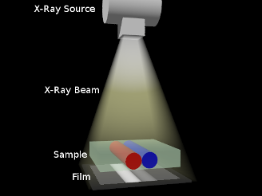
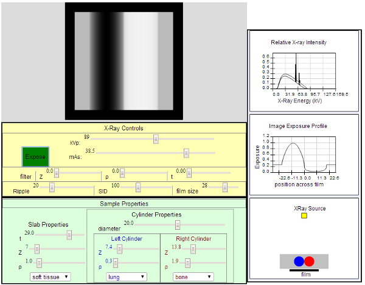

This applet simulates some of the basic concepts of X-Ray imaging, exploring how different aspects of both the X-Ray source as well as the sample affect the X-Ray image.

The applet has one main window which contains the simulated image and the controls to manipulate the X-Ray characteristics and the physical characteristics of the sample to be imaged. In addition to the main panel, there are two optional windows. The first contains a graph of the X-ray spectrum and a second graph of the simulated exposure level of the film. The second optional window shows the geometry of the sample, which consists of a slab with two embedded cylinders within it.
The X-Ray and exposure controls are in the yellow section of the applet. The primary X-Ray controls are an "Expose" button and sliders to control kVp and exposure (mAs). Whenever any parameters change, the Expose button turns from green to red. The new exposure is not taken (simulated) until the Expose button is pressed. Once the Expose button is pressed it will turn grey until the simulated exposure is complete, upon which the Expose button will turn green. Additional filtration can be added by specifying the atomic number (Z), density (ρ in g/cm3) and thickness of the filter (cm). The amount of ripple in the high voltage can be adjusted, which will modify the effective X-Ray spectrum. The source to image receptor distance (SID in cm) can be varied, which in turn affects the intensity of the X-Rays that reach the film. The last control in this section is the film-size control: reducing the film size allows the user to zoom in on smaller detail in the X-Ray image.
The sample to be imaged is a slab with two imbeded cylinders. The cylinders are the same diameter, lie parallel and abut each other in the middle of the slab. The left section of the sampleproperties sections control the slab thickness (cm), atomic number and density (g/cm3), with a drop down menu to select some common materials of interest in medical imaging. The right section controls the cylinders' diameter and material composition. The left and right cylinders have the same size but can be assigned different material properties and each cylinder's properties can be selected from drop down menus.
At the bottom of the main window are check boxes that allow the display of the graph windows and the geometry window described above. There is also a reset button which takes the simulation to its start up state.
When the applet starts, the X-Ray controls are set to approximately an appropriate setting for a forearm X-ray. The slab has the material properties of soft tissue, the left embedded cylinder has the material properties and approximate diameter of a forearm bone. The right cylinder is set to be solid calcium, to provide some distinction from the right cylinder.
Student Activities:
Start with the default settings and explore what happens when the characteristics of the X-Ray source are changed. It will be helpful to have the optional graph window to help you see what is happening.
Make small adjustments to kVp (increase and decrease by 5 kVp, and don't forget to press the exposure button for each new image). Since an increase in kVp increases both quantity and beam quality, do the observed changes in the simulated make make sense?
Reset the simulation and then make small adjustments to mAs (increase or decrease by .5 mAs). Since an increase in mAs only increases beam quantity, do the observed changes make sense?
Is it possible to have an increase in kVp and a (different) increase in mAs have exactly the same effect on the immage? What is your reasoning.
Reset the simulation and add some aluminum filtration: Z=13, ρ=2.7 and thickness =.4 (this will be approximately a half value layer). Notice that the simulated film is now underexposed compared to the default settings. With this filter in place, double the mAs to 10 and take a new exposure. Compare this image to the original exposure.
Reset the simulation and double the SID. What effect does this have on the image? How can this change be reversed by modifying the mAs?
Reset the simulation and increase the ripple to 20%. What effect does this have on the X-Ray spectrum? What effect does it have on the image? Repeat with the ripple now raised to 50% and then 100% and comment on the resulting effect on both the spectrum and the image.
Experiment with other sample configureations. A starting point for a chest X-ray would be with a 22 cm thick slab with two 8 cm diameter cylinders configured as lung. Set the exposure with 120 kVp/5 mAs and a SID of 180 cm.
Remember: this applet is a simple simulation that is useful for exploring some of the basic features of X-Ray imaging. It should not be used to predict appropriate settings for taking diagnostic X-Rays.